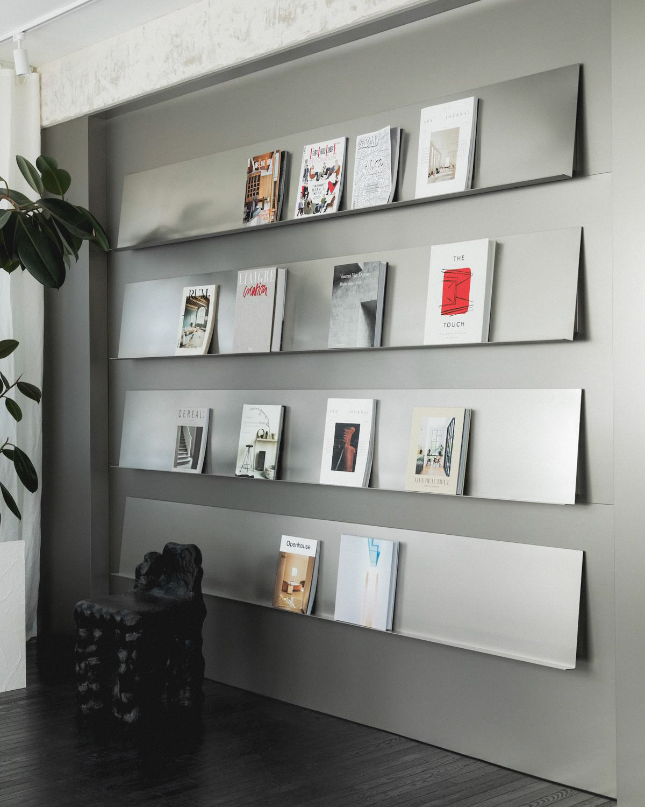
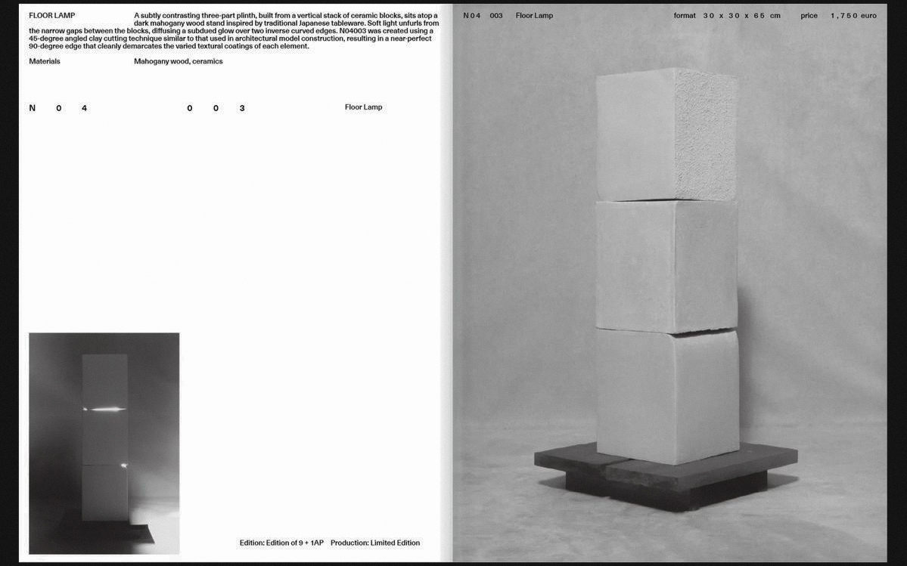
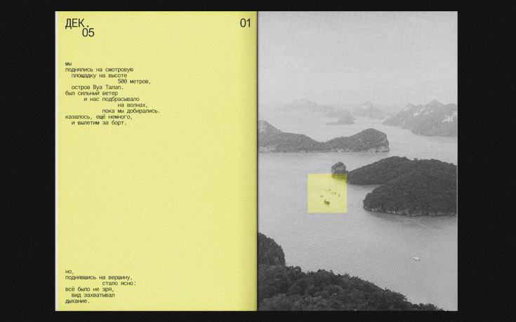
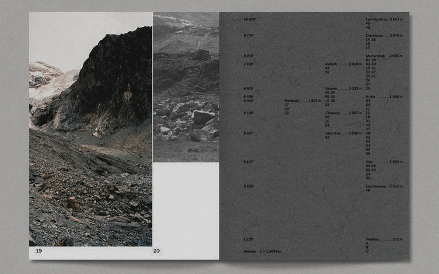
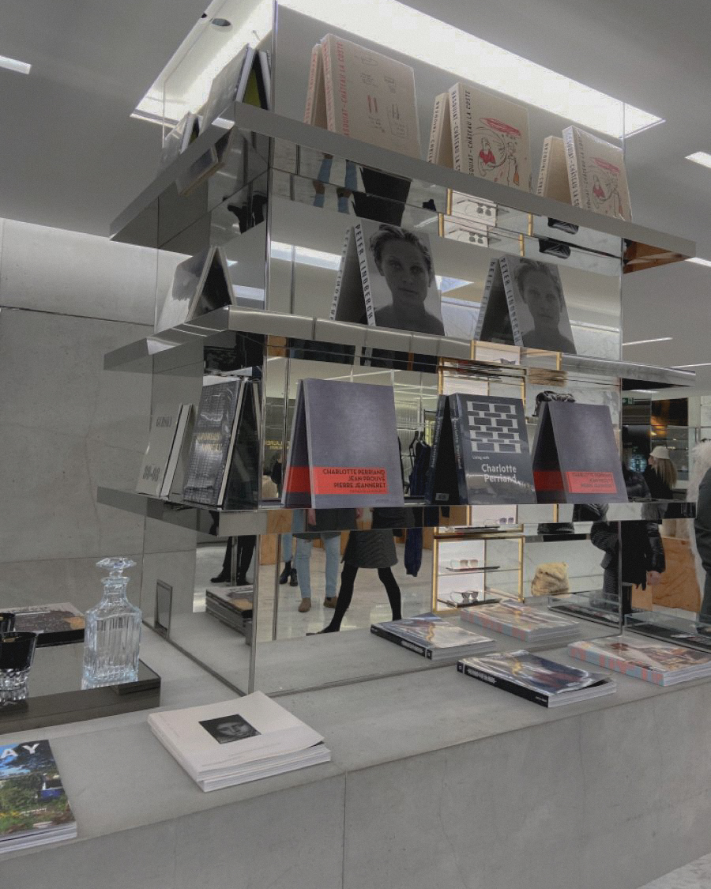

Diseñadora web y escritora
Guía práctica sobre herramientas digitales para creativos.
Presentación y taller. 18 de septiembre, 20:00 hs.

Moderador: Diego Fernández, historiador del diseño
Tres autores presentan investigaciones sobre diseño industrial nacional.
25 de septiembre

Editora y diseñadora gráfica
Taller sobre layout, tipografía y producción de publicaciones independientes.
8 de octubre, cupos limitados

Programador y escritor técnico
Libro sobre programación creativa y arte generativo para no programadores.
15 de octubre

Curadora: Sofía Delgado, bibliotecaria especializada
Manuales técnicos y de diseño de los 70s-90s que influenciaron el diseño actual.
Último viernes del mes
Nuestra selección editorial se concentra en publicaciones que abordan la cultura del diseño, la tecnología creativa y las profesiones relacionadas con la comunicación visual. Privilegiamos libros que combinen rigor técnico con accesibilidad, dirigidos tanto a profesionales como a personas interesadas en entender mejor el diseño que nos rodea.
El catálogo incluye manuales prácticos sobre software de diseño, historia del diseño gráfico e industrial, biografías de diseñadores influyentes y ensayos sobre la relación entre tecnología y creatividad. También damos espacio a publicaciones independientes que documenten escenas locales de diseño y cultura visual.